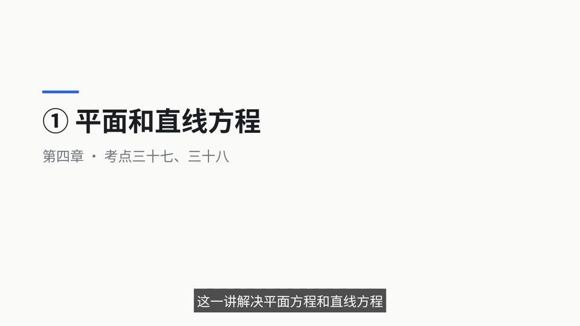
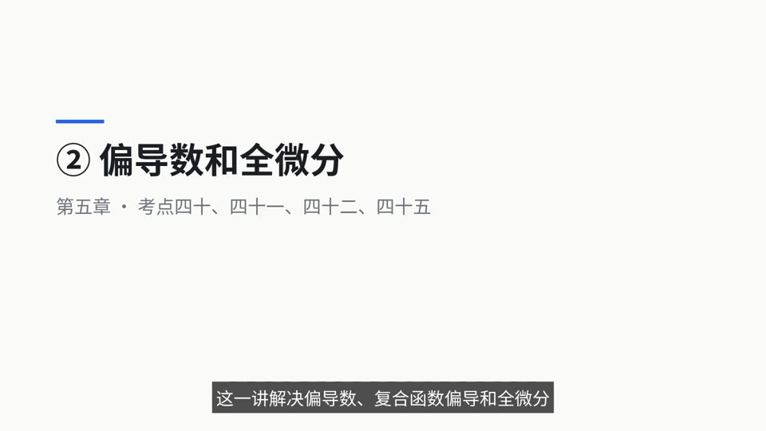
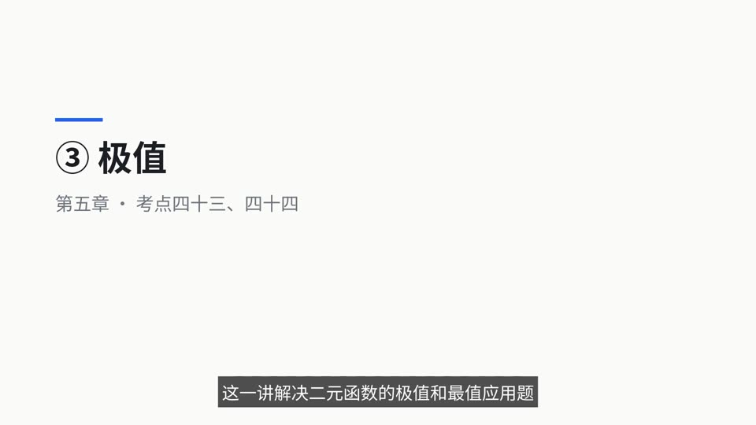
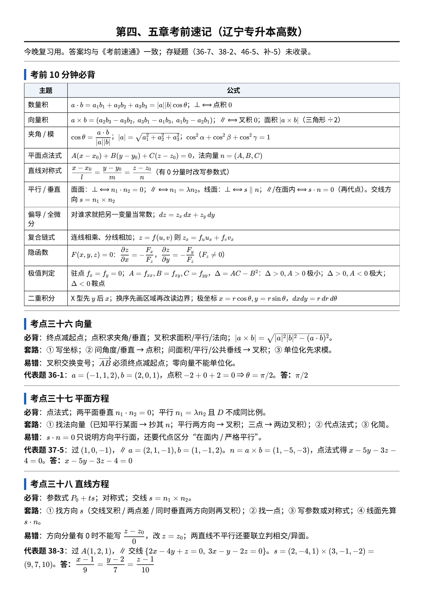
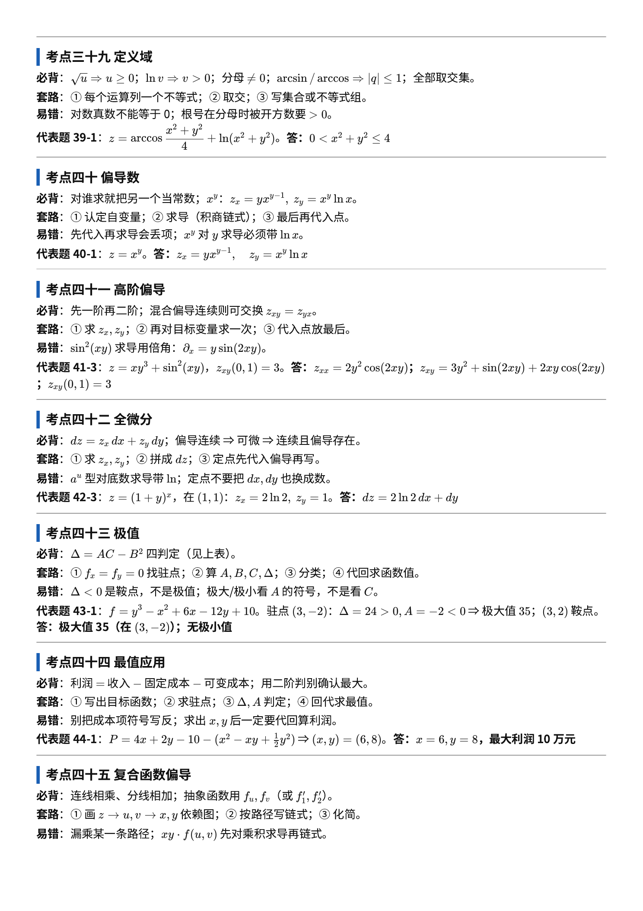
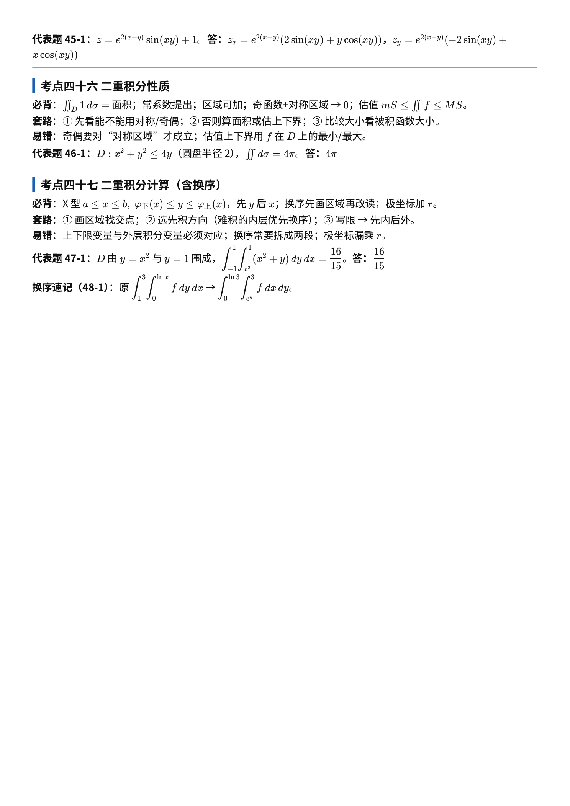

第1天
三十六：概念、坐标、模和方向终点减起点、模、单位向量、方向余弦平方和
自编例1—2，求方向与长度
终点减起点、模、单位向量、方向余弦平方和
自编例1—2，求方向与长度
点积求夹角、垂直点积零、平行叉积零、面积
自编例3及P123六题，先判断题型
点法式、参数式、距离、线面角、位置判定
自编例4—6，完整写两道空间大题
根号/对数/分母限制；偏导固定另一元；混合偏导条件
自编例7—8，先一阶再二阶
全微分；可微的充分条件；链式法则连线相乘分线相加
自编例9，复合函数先画依赖图
驻点；A、B、C；AC−B²四种判断
自编例10，分别说出点、值、局部/全局
建模与定义域；内部＋边界；拉格朗日方程
自编例11，练带约束最值
积分性质1—8；X型区域先y后x
自编例12，再练画区域、写积分上下限
设 a=(a1,a2,a3)、b=(b1,b2,b3)，则
直观含义：向量既有长度，又有方向；加法是接着走两段路，减法是加上反方向。每个坐标轴上的位移分别相加，所以能逐坐标运算。数乘改变长度，负数还会反向。
非零向量与三个坐标轴正方向的夹角分别为 α,β,γ，取值均在 [0,π]。
为什么：模来自三维勾股定理；坐标分量是向量在轴上的有向投影，“投影÷长度”就是夹角余弦。三个余弦平方相加相当于把模平方除以自身。
直观与理解：点积是“一条向量的长度 × 另一条在它上面的有向投影”，结果为数；叉积的方向垂直于两向量所在平面，按右手定则取向，模是平行四边形面积。叉积的坐标公式可由同时垂直于两向量的条件导出，并按右手方向确定符号。
非零向量：垂直用 a·b=0；平行用 a×b=0。三角形面积为叉积模的一半。
叉积满足左右分配律：
非零向量平行可写为成比例；讲义比例式 b1/a1=b2/a2=b3/a3 只在分母全非零时直接使用。遇零分量改用 b=λa 或叉积为零。点积、叉积的分配性来自坐标展开，理解后可少记孤立公式。
夹角/垂直 → 点积；平行/面积 → 叉积或成比例；模与方向余弦先求 |a|。
常见题型：由两点求向量、向量线性组合、平行或共线判断。非零向量平行等价于存在非零实数 k 使 a=kb，也可用叉积为零判断，避免除以零。
通用方法：先数乘，再按坐标加减，最后核对符号。
常见题型：求长度、单位向量、方向余弦，由两个方向余弦求第三个（要结合方向判断正负）。
通用方法：求模 → 各坐标除以模 → 必要时取反余弦。
常见题型：求夹角、判垂直、求面积、找平面法向量。
通用方法：问角度或垂直先点积；问面积或公共垂直方向先叉积。
第一眼判断：只有数乘和减法，不涉及夹角，不必用点积。
分步解答：
答案：(0,5,-5)。
易错点：减去负数要变加；求 AB 必须“终点减起点”。
通用方法：先数乘，再按坐标加减，最后核对符号。
已知 a=(1,2,-1)、b=(2,-1,3)，求 2a-b。
第一眼判断：先求模，后面的量都用它作分母。
分步解答：
答案：如上，角度保留反余弦的精确形式。
易错点：方向角不是方向余弦；零向量没有方向角，不能单位化。
通用方法：求模 → 各坐标除以模 → 必要时取反余弦。
求 v=(1,2,2) 的模、同向单位向量和三个方向角。
第一眼判断：夹角用点积，面积与垂直方向用叉积。
分步解答：
答案：-3,-3/√84,(5,-5,-5),5√3/2。
易错点：交换叉积顺序会反号；点积是数，叉积是向量。
通用方法：问角度或垂直先点积；问面积或公共垂直方向先叉积。
对例题 1 的两向量，求点积、夹角余弦、叉积及它们张成的三角形面积。
夹角。点积 -2+0+2=0 ⇒ θ=π/2。
答：π/2
夹角余弦。点积 7，模 3√2, 3 ⇒ 7√218。
答：7√218
平行求 x。AB=(2,x-1,y-1)=λ(2,3,4) ⇒ λ=1,x=4（顺带 y=5）。
答：4
求和向量模。|a+b|2=4+9+2·2·3·12=19。
答：√19
共线 + 点积。b=λ a, 14λ=56, λ=4。
答：(4,-8,12)
垂直。点积 -1-4+t=0。
答：t=5
方向角可行组。检验 ∑cos2=1：仅 C 满足。
答：C
a=(0,1,1)，|a|=√2。方向角 π2,π4,π4。
答：π/2,π/4,π/4
反向单位向量 -a|a|，|a|=3。
答：(-23,-13,-23)
平行单位向量 ±a|a|，|a|=√26。
答：±(-3,4,1)√26
同时 ⊥a=(1,1,1) 与 ⊥j。v2=0,v1+v3=0 ⇒ i-k。
答：D
叉积不满足交换律。
答：C
(a+b)×(a-b)=-2a× b=-2(1,2,3)×(0,1,-2)=(14,-4,-2)。
答：(14,-4,-2)
三角形面积 12|AB×AC|=√352。
答：√352
平行四边形面积 |a× b|=√6。
答：√6
|a× b|=√25-9=4。
答：A. 4
c=a+a× b，a⊥(a× b) ⇒ |c|=√9+16=5。
答：5
设 Ax+By+Cz+D=0，法向量 (A,B,C)≠0。
| 序号 | 系数条件 | 讲义对应结论及严格说明 |
|---|---|---|
| 1 | D=0 | 平面过原点 |
| 2 | A=0 | 平面平行x轴方向；可能包含x轴，需看D |
| 3 | B=0 | 平面平行y轴方向；可能包含y轴 |
| 4 | C=0 | 平面平行z轴方向；可能包含z轴 |
| 5 | A=B=0 | Cz+D=0，与xOy面平行或重合 |
| 6 | B=C=0 | Ax+D=0，与yOz面平行或重合 |
| 7 | A=C=0 | By+D=0，与xOz面平行或重合 |
| 8 | A=D=0 | 平面包含x轴 |
| 9 | B=D=0 | 平面包含y轴 |
| 10 | C=D=0 | 平面包含z轴 |
为什么：缺哪个坐标，哪个坐标就能任意变化；验证是否过某条轴，将轴上点代入即可。讲义“平行”有时指方向关系，此处显式区分包含或重合，以免误判严格位置关系。
设两法向量为 n1,n2。
平面法向量 n=(A,B,C)≠0，过 P0(x0,y0,z0)：
为什么：平面内任一点与 P0 的连线都垂直于法向量，所以 n·P0P=0。
点 Q(x1,y1,z1) 到平面 Ax+By+Cz+D=0 的距离：
为什么：分子除以法向量的模，就是沿法向量的投影长度，再取绝对值。
设直线非零方向向量为 s，线面夹角为 φ∈[0,π/2]：
为什么是正弦：线与面的角，和线与法线的锐角互余。
先找法向量 n（已知 // 平面则抄其法向量；已知 // 两方向则叉积；垂直于某平面则 n· n0=0），再代点法式；两平面关系看 n1· n2 与系数比例。
常见题型：给点和法向量求平面；给两平面求交线；点面距离；线面夹角与位置关系。
通用方法：写平面 → 求距离 → 方向与法向量作点积/叉积 → 检查基点。
通用方法：法向量叉积找方向 → 联立找一点 → 参数式 → 点积求夹角。
第一眼判断：已给法向量和一点，直接点法式，不必求截距。
分步解答：
答案：x+y+z-1=0；距离 √3/3；l1 平行，l2 垂直。
易错点：点积为零不一定“严格平行”，还可能在面内；距离分子必须取绝对值。
通用方法：写平面 → 求距离 → 方向与法向量作点积/叉积 → 检查基点。
平面 Π 过 P(1,0,0)，法向量为 (1,1,1)。求其方程及 Q(2,0,0) 到它的距离；判断下列两直线与平面的关系：
第一眼判断：交线方向属于两个平面，应同时垂直于两个法向量。
分步解答：
答案：(x,y,z)=(0,1/2,1/2)+t(1,0,-1)，夹角 π/4。
易错点：不能把两法向量之和当成交线方向；这里 y 方向分量为零，不能在对称式中除以零。
通用方法：法向量叉积找方向 → 联立找一点 → 参数式 → 点积求夹角。
求 Π1:x+y+z=1 与 Π2:x-y+z=0 的交线参数方程，并求交线与 Σ:z=0 的夹角。

两平面垂直。7m-2+3=7m+1=0。
答：m=-17
n1· n2=1≠0，法向量不成比例。
答：相交
⊥x 轴 ⇒ n=(1,0,0)，过 (a,0,0)。
答：x=a（或 x-a=0）
// 已知平面 ⇒ n=(3,-2,1)，过 (1,2,3)。
答：3x-2y+z=2
n=a× b=(1,-5,-3)，过 (1,0,-1)。
答：x-5y-3z-4=0
含 M1M2=(1,6,1) 且 ⊥ 已知平面 ⇒ n=(1,-8,3)×(1,6,1)=(-26,2,14)，化简过 M1。
答：13x-y-7z-37=0（或同解形式）
// y 轴 ⇒ B=0，过 P,Q ⇒ 2x+z-5=0。
答：2x+z-5=0
n=OA×OB 用两点 (1,2,3),(2,-1,1) 得 n=(5,5,-5)。
答：x+y-z=0
过 (1,2,3) 且平行于 3x-2y+z=0 的平面
先找法向量 n（已知 // 平面则抄其法向量；已知 // 两方向则叉积；垂直于某平面则 n· n0=0），再代点法式；两平面关系看 n1· n2 与系数比例。
// 已知平面 ⇒ n=(3,-2,1)，过 (1,2,3)：3(x-1)-2(y-2)+(z-3)=0。
3x-2y+z=2
掌握记录
平面：点法式见上；一般式为 Ax+By+Cz+D=0，其中 (A,B,C)≠(0,0,0)。若三个轴截距 a,b,c 均存在且非零，可写：
直线过 P0，方向 (l,m,n)≠(0,0,0)：
仅当 l,m,n 全非零时，可直接写标准对称式：
有零方向分量时，对应坐标固定，其他分量照写。空间直线也可表示为两个相交平面方程的联立。
直观与理解：直线上的点从基点出发，只沿一个固定方向移动；平面是一条线性约束，空间直线一般需要两条独立线性约束。
方向向量 si=(mi,ni,pi) 必须非零。
交线方向 s=n1× n2；过点 + 方向 → 参数式/点向式；线面位置先算 s· n，为 0 再代点；两直线先看方向是否平行，再联立判相交/异面。
常见题型：两点求直线、参数式转对称式、由截距写平面、三点求平面（先用两条边叉积求法向量）。
通用方法：取一点 → 求非零方向 → 优先写参数式，最不容易漏零分量。
第一眼判断：两点确定方向，先求 AB。
分步解答：
答案：(x,y,z)=(1,0,2)+t(2,-1,0)，或 (x-1)/2=-y, z=2。
易错点：不能写 (z-2)/0；平面方程的系数是法向量，不是平面内方向。
通用方法：取一点 → 求非零方向 → 优先写参数式，最不容易漏零分量。
求过 A(1,0,2)、B(3,-1,2) 的直线方程。
s=(2,-3,1)=n ⇒ 直线 ⊥ 平面（必相交于一点）。
答：垂直
s=(2,-4,1)×(3,-1,-2)=(9,7,10)，过 (1,2,1)。
答：x-19=y-27=z-110
参数 x=-2+3t,y=3-2t,z=t 代入平面得 t=1。
答：(1,1,1)
直线方向 s=(-1,3,1)，平面法向量即 s，过 M。
答：x-3y-z+4=0（或 -x+3y+z-4=0）
s=(1,0,-4)×(2,-1,-5)=(-4,-3,-1)，过 (-3,2,5)。
答：x+34=y-23=z-51（方向取反亦可）
s1=(-3,1,10),s2=(4,-1,2)，所求方向 s1× s2=(12,46,-1)，过 (-1,-4,3)。
答：x+112=y+446=z-3-1
s⊥(1,3,4) 且 s·(2,3,-1)=0 ⇒ s=(2,3,-1)×(1,3,4)=(15,-9,3)=3(5,-3,1)。
答：x-15=y-2-3=z-31
方向不平行；联立参数方程无解。
答：异面
6k+(k+1)+5(k-2)=0 ⇒ 12k=9。
答：k=34
s· n=0 ⇒ m-4-1=0。
答：m=5
为什么：每一个运算必须在实数范围内合法；同一个点要让所有部分都合法，所以条件取交集，不是并集。根号若在分母，则被开方数要严格大于零。
直观含义：定义域是 xy 平面上的允许区域，不再只是一段数轴区间。
根号 ≥0、对数真数 >0、分母 ≠0、反三角 |·|≤1；全部取交集。
常见题型：圆盘、圆环、半平面及去掉直线或曲线的区域，注意实线边界与虚线边界。
通用方法：逐项列合法条件 → 取交集 → 画出区域并标边界。
第一眼判断：有根号和对数，必须分别列条件。
分步解答：
答案：1<x2+y2≤4。
易错点：对数真数不能等于零；半径是平方根，外半径不是 4。
通用方法：逐项列合法条件 → 取交集 → 画出区域并标边界。
求 f(x,y)=√4-x2-y2+ln(x2+y2-1) 的定义域。
|r24|≤1 且 r2>0。
答：0<x2+y2≤4
r2≤4，r2>1，且 ln(r2-1)≠0 ⇒ r2≠2。
答：1<x2+y2≤4 且 x2+y2≠2
直观含义：沿 x 方向或 y 方向切开曲面，看截线上瞬时变化率。固定另一变量后，就是一元求导。
乘积、商、链式法则仍适用，例如
若混合二阶偏导在邻域内连续，则 fxy=fyx，不能对任意函数无条件交换。
对谁求就把另一个当常数；复合/积商用链式、乘积法则；代入点在求导之后。
常见题型：一阶偏导、指定点偏导、混合偏导、复合函数链式求导。
通用方法：写明求导变量 → 冻结另一变量 → 乘积/链式法则 → 化简。
第一眼判断：指数内部还有 xy，求导需乘内层导数。
分步解答：
答案：如上。
易错点：∂ exy/∂ x 不是 exy，还要乘 y；混合偏导第二次求导时，不要沿用第一次“哪个是常数”的判断。
通用方法：写明求导变量 → 冻结另一变量 → 乘积/链式法则 → 化简。
设 f=x2y+exy，求 fx,fy,fxy。
z=xy=eyln x。
答：zx=yxy-1, zy=xyln x
zy=6x+3y2，(1,2) → 6+12=18。
答：18
三项乘积，在 (1,0) 处 ln=0，只剩中间项 e·2xx2+y2·cos=2。
答：2
zx=xz,zy=yz ⇒ 平方和 =1。
答：1
u=x2+y2+z2, z=x2sin y：ux=2x+2z·(2xsin y)，uy=2y+2z·(x2cos y)。
答：ux=2x+4x3sin2 y, uy=2y+2x4sin ycos y（可保留含 z 的形式）
对一阶偏导再次求偏导，得到四个二阶偏导：
这里明确以右下标顺序表示“先x后y”等，避免不同分式记号的阅读歧义。讲义定理：两个二阶混合偏导在区域D内连续，则该区域内 fxy=fyx。
直观理解：一阶偏导看坡度，二阶偏导看坡度怎样变化；混合偏导看一个方向的坡度随另一个方向如何变化。常见题型：求二阶纯偏导、混合偏导，用连续条件交换求导次序简化计算。自编例8已示范“先x后y”，也可从其 fy 对x求导核对。
先求一阶再求二阶；混合偏导连续则可交换次序；代入点放最后。
通用方法：先写出一阶式子，再逐步求导；不要跳过乘积法则，不要无条件交换次序。
z=arctanyx。
答：zxx=2xy(x2+y2)2, zyy=-2xy(x2+y2)2
z=arctanyx。
答：zxx=2xy(x2+y2)2, zyy=-2xy(x2+y2)2
z=ye-(x+y)+sin(xy)。
zxx=ye-(x+y)-y2sin(xy)；
zxy=e-(x+y)(y-1)+cos(xy)-xysin(xy)；
zxy(0,π)=1+(π-1)e-π。
答：如上
z=xy3+sin2(xy)。
zxx=2y2cos(2xy)；
zxy=3y2+sin(2xy)+2xycos(2xy)；
zxy(0,1)=3。
答：如上
z=√x2+y2 时 zxx+zyy=1z。
答：得证
函数在该点可微时：
为什么：把两个方向带来的变化的一阶主要部分相加；几何上是在曲面附近用切平面近似曲面。偏导在点的某邻域内存在且在该点连续，是可微的充分条件；仅偏导存在不保证可微。
不要倒推：偏导存在不一定连续，也不一定可微；连续不保证偏导存在。偏导只检查坐标轴方向，而可微控制所有方向的一阶误差。指定点的全微分应写为
先求 zx,zy，再写 dz=zx dx+zy dy；定点把偏导代入该点。
常见题型：求全微分、在指定点写微分、利用微分估计小增量。dz 是线性主要部分，通常不等于实际 Δ z。
通用方法：求偏导 → 检查可微条件 → 写微分 → 在原点代系数 → 乘各自增量。
第一眼判断：两个变量同时小幅改变，用全微分相加估计。
分步解答：
答案：全微分如上，增量估计 -0.06，精确增量 -0.0597。
易错点：估计增量时偏导系数在原点 (1,2) 计算，不是在新点计算；不要把近似号写成等号。
通用方法：求偏导 → 检查可微条件 → 写微分 → 在原点代系数 → 乘各自增量。
z=x2+xy+y2，求全微分，并估计从 (1,2) 变到 (1.01,1.98) 时的函数增量。

zx=-2y(x-y)2, zy=2x(x-y)2。
答：dz=-2y dx+2x dy(x-y)2
zx=x+yx2+y2, zy=y-xx2+y2。
答：dz=(x+y)dx+(y-x)dyx2+y2
在 (1,1)：zx=2ln2, zy=1。
答：dz=2ln2 dx+dy
在 (1,1)：zx=12, zy=-12。
答：dz=12 dx-12 dy
由 dz 读出 zx=-ysin x ⇒ zxx=-ycos x。
答：-ycos x
无约束内部极值：若一阶偏导存在，内部极值点必满足
这样的点叫驻点，只是候选点，不一定是极值点。若函数二阶偏导在驻点附近连续，在驻点计算：
为什么：驻点处一阶变化为零，主要看二阶项
当 A≠0，配方为 12[A(h+Bk/A)2+(Δ/A)k2]。同号说明周围都升或都降；异号说明不同方向有升有降。Δ=0 时更高阶项可能决定结果。
条件极值：拉格朗日乘数法。约束 g(x,y)=0，若目标与约束光滑且约束梯度不为零，候选点满足
理解：沿约束曲线移动时，极值处目标函数不能再有一阶切向变化，因此目标梯度与约束法向量平行。
最值不等于局部极值：连续函数在非空闭有界区域上有最大、最小值。找内部驻点及不可导点，再找边界候选点、角点，统一比较。约束梯度为零的点须另外检查；乘数法只给候选点，不自动证明最大最小。
必要条件用于内部点：在点取得极值，且两偏导存在，则两偏导都为零。边界上的约束极值不能直接套此条件。 充分条件要求驻点邻域内有连续的一、二阶偏导；然后按 AC-B2 判定。
固定写法：①联立一阶偏导为零找全部驻点；②逐点算A、B、C；③逐点分类；④代回原函数求极值。报告“点”和“值”两项，不要混淆。
① fx=fy=0 找驻点；② 算 A,B,C,Δ=AC-B2；③ 分类；④ 代回求值。
常见题型：驻点分类、闭区域最值、圆或椭圆约束下的条件最值。
通用方法：一阶找点 → 二阶分类 → 代回求值 → 要求最值时另查边界或全局性质。
第一眼判断：光滑多项式，先联立一阶偏导为零。
分步解答：
答案：(1,2) 处取极小值及全局最小值 -5，无极大值、无最大值。
易错点：驻点不是“答案已出”；AC-B2 不要写成 AB-C2。
通用方法：一阶找点 → 二阶分类 → 代回求值 → 要求最值时另查边界或全局性质。
求 f=x2+y2-2x-4y 的极值，并判断是否为全局最值。

f=y3-x2+6x-12y+10。
驻点 (3,-2)：Δ=24>0,A=-2<0 ⇒ 极大值 f=35；
驻点 (3,2)：Δ=-24<0 ⇒ 鞍点，非极值。
答：极大值 35（在 (3,-2)）；无极小值
f=ex-y(x2-2y2)+3。
(-4,-2)：Δ>0,A<0 ⇒ 极大值 3+8e-2；
(0,0)：Δ<0 ⇒ 鞍点。
答：极大值 3+8e-2（在 (-4,-2)）；无极小值
为什么先定定义域：实际问题可能要求长度、体积为正，或有固定总量约束；定义域决定边界和可行点。驻点只是内部候选，必须检查边界、角点、不可导点；开区域或无界区域不一定取到最值。条件极值可用上节介绍的拉格朗日法，但要比较候选值。
利润 = 售价收入 − 固定成本 − 可变成本；对 x,y 求驻点；用二阶判别确认最大。
讲义三步：①根据实际问题建立函数关系，确定定义域；②求驻点；③结合实际意义判定最大、最小值。
常见题型：固定材料求最大容量、固定总量求最优分配、圆/椭圆约束最值。先写目标函数，再写可行条件，切忌只解导数方程不回答实际量和单位。
通用方法：验证约束正则 → 写三方程 → 完整求候选点 → 比较目标函数值。也可用 (x± y)2≥0 验证 -1/2≤ xy≤1/2。
第一眼判断：点只能在单位圆上移动，不能直接用无约束驻点作为答案。
分步解答：
答案：最大值 1/2，最小值 -1/2，取值点如上。
易错点：漏写约束方程；直接约去 x,y 而不检查零的可能性；乘数 λ 不是极值。
通用方法：验证约束正则 → 写三方程 → 完整求候选点 → 比较目标函数值。也可用 (x± y)2≥0 验证 -1/2≤ xy≤1/2。
在 x2+y2=1 上求 f=xy 的最大、最小值。
P=4x+2y-10-(x2-xy+12 y2)。
Px=-2x+y+4=0, Py=x-y+2=0 ⇒ (x,y)=(6,8)；Δ>0,A<0 为极大。
答：x=6,y=8，最大利润 10 万元
设 z=f(u,v), u=φ(x,y), v=ψ(x,y)，各层满足可微条件，则
理解/推导：先写 dz=fu du+fv dv，再写 du=uxdx+uydy、dv=vxdx+vydy，代入后分别收集dx与dy系数即可。因此口诀是“连线相乘，分线相加”：x影响z有经u和经v两条路，缺一路就漏项。
画依赖图，连线相乘、分线相加；抽象 f 用 f1,f2（或 fu,fv）表示。
常见题型：给中间变量求偏导；用抽象 fu,fv 表示答案。步骤：画z→u,v→x,y依赖图 → 写所有路径乘积 → 求和 → 把中间变量代回。若z还显含x或y，要再加直接路径；不能误把中间变量当成常数。可将原自编例8的指数项视为 u=xy,z=eu 来练习单路径版本。
z=e2(x-y)sin(xy)+1。
答：zx=e2(x-y)(2sin(xy)+ycos(xy))，zy=e2(x-y)(-2sin(xy)+xcos(xy))
z=e2(x-y)sin(xy)+1。
答：zx=e2(x-y)(2sin(xy)+ycos(xy))，zy=e2(x-y)(-2sin(xy)+xcos(xy))
u=x2-y2,v=2x+3y。
答：∂ z∂ y=-2y f1'+3 f2'（f1',f2' 为对两个中间变量的偏导）
z=xy f(u,v), u=x2+y, v=x-y2。
答：∂ z∂ x=y f+xy(2x fu'+fv')
dzdt=exy(ycos t-xsin t)=esin tcos tcos 2t。
答：e12sin 2tcos 2t
∬D f(x,y)dσ 中，∬ 是二重积分号，D是积分区域，f为被积函数，x、y为积分变量，dσ=dA=dxdy 为面积元素，f(x,y)dσ 为被积表达式。面积元素没有一维定积分“交换上下限变负号”的方向性。
默认涉及的函数均可积，区域面积有限。
几何意义：当 f≥0 时，
是底面为 D、上顶为 z=f(x,y)、下底为 z=0 的曲顶柱体体积。把底面切成小块，“小底面积 × 高”相加，取极限得到积分。若 f 可正可负，积分表示有向体积；总几何体积应为 ∬D|f| dA。
估值定理：f 在有限面积区域 D 上可积，S=area(D)，且 m≤ f≤ M，则
为什么：每块小柱的高都夹在 m,M 之间，相加后仍被两个等高柱体夹住。不要求 m,M 一定是精确最小最大值，任何有效上下界都能用。
积分中值定理（常用充分条件）：D 为有正面积的闭有界连通区域，f 在 D 上连续，则存在 (ξ,η)∈ D，使
为什么：估值定理说明平均高度介于最小、最大高度之间；连续性与连通性保证中间这个高度能在区域上取到。中值点通常不唯一，也不能预先认定是几何中心。
∬1=面积；常系数提出；区域可加；奇函数对称区域积分为 0；估值用 m,M 乘面积；比较看被积函数大小。
常见题型：不计算积分先判断符号/范围，求体积或平均值，验证中值点存在。
通用方法：画区域求面积 → 找函数上下界 → 先估值 → 必要时计算 → 积分除面积找平均高度。
第一眼判断：正方形面积易求，被积函数非负，既能解释体积，也能用最小最大高度估值。
分步解答：
答案：曲顶柱体体积为 1；估值为 0≤ I≤2；可取中值点 (1/2,1/2)。
易错点：估值别忘乘面积；中值点不唯一；被积函数有负值时，积分不一定是普通体积。
通用方法：画区域求面积 → 找函数上下界 → 先估值 → 必要时计算 → 积分除面积找平均高度。
D=[0,1]×[0,1]，f=x+y。解释 I=∬D(x+y) dA 的几何意义，给出估值并计算，最后找一个中值点。
圆 (x)2+(y-2)2≤4，面积 4π。
答：4π
边长 4 的正方形。
答：16
四分之一圆环面积 3π4，乘 4。
答：3π
sin5 x 关于 x 为奇、区域左右对称 ⇒ 积分为 0；剩 ∬1=16。
答：16
单位圆盘上 0≤ r≤1，cos 递减 ⇒ cos r≥cos r2≥cos r4。
答：B（I1>I2>I3）
D1⊂ D2 且 x2+y2≥0。
答：B（I1<I2）
面积 8π，0≤ln(x2+y2)≤ln9=2ln3 ⇒ 0≤ I≤16πln3。
答：B
直观含义：固定x画竖线，竖线从下边界走到上边界；先把这一条上的量对y积起来，再让x从左到右扫过整个区域。为什么先y：内层把x固定，y在该竖线内变化；外层才改变x。
画区域定上下限；被积函数含 y2 的三角等难积时优先换序；先算内层。
常见题型：读图写区域、从不等式写上下限、把二重积分化为累次积分。自编例12的单位正方形就是X型，a=0,b=1,φ下=0,φ上=1。
通用方法：①画边界，求交点；②确定x投影区间；③固定x找y的下、上界；④先y积分，x当常数；⑤再x积分。若竖线的上、下边界表达式随x改变，必须分段。易错点：外层上下限不能仍含y；把x当常数不等于把含x项全部删掉；积分上界减下界的顺序不能反。
D:-1≤ x≤1, x2≤ y≤1。
∫-11∫x21(x2+y) dy dx=1615。
答：1615
D:-1≤ x≤1, x2≤ y≤1。
∫-11∫x21(x2+y) dy dx=1615。
答：1615
交点 y=-1,2；对 y：-1≤ y≤2, y2≤ x≤ y+2。
∫-12∫y2y+2xy dx dy=458。
答：458
区域：1≤ x≤2, 1≤ y≤ x2（由 y=1,y=x2,x=2 围成）。
∫12∫1x2xy dy dx=2ln4-32=4ln2-32。
答：4ln2-32
0≤ y≤1, 0≤ x≤ y2：内层 ∫0y2ex/ydx=y(ey-1)，再积得 12。
答：12
换序：0≤ y≤2, 1≤ x≤ y+1 ⇒ ∫02 ycos(y2) dy=12sin4。
答：12sin4
∫01 x2·32 dx=12。
答：12
X 型先 y 后 x；换序先画区域再改读边界；极坐标 x=rcosθ,y=rsinθ，dxdy=r dr dθ
先根据原累次积分画出区域，再换成“先 x 后 y”或反过来重新读边界。
原：1≤ x≤3, 0≤ y≤ln x。
答：∫0ln3∫ey3f dx dy
原：1≤ x≤3, 0≤ y≤ln x。
答：∫0ln3∫ey3f dx dy
原：-1≤ y≤2, y2≤ x≤ y+2。
答：∫01∫-√x√xf dy dx+∫14∫x-2√xf dy dx
圆盘 (x-1)2+y2≤1。
答：∫-11∫1-√1-y21+√1-y2f dx dy
抛物线与圆 x2+y2=8 第一象限拼接，0≤ y≤2。
答：∫02∫√2y√8-y2f dx dy
下界 y=|x|，上界 y=2-x2，x∈[-1,1]。
答：∫01∫-yyf dx dy+∫12∫-√2-y√2-yf dx dy
换序后 ∫01 x2√x3+1 dx=2(2√2-1)9。
答：∫01∫0x2√x3+1 dy dx（值 2(2√2-1)9）
| 主题 | 公式 |
|---|---|
| 数量积 | a· b=a1b1+a2b2+a3b3=lvert arvertlvert brvertcosθ；⊥ ⟺ 点积 0 |
| 向量积 | a× b=(a2b3-a3b2, a3b1-a1b3, a1b2-a2b1)；∥ ⟺ 叉积 0；面积 lvert a× brvert（三角形 ÷2） |
| 夹角 / 模 | cosθ=a· blvert arvertlvert brvert；lvert arvert=√a12+a22+a32；cos2α+cos2β+cos2γ=1 |
| 平面点法式 | A(x-x0)+B(y-y0)+C(z-z0)=0，法向量 n=(A,B,C) |
| 直线对称式 | x-x0l=y-y0m=z-z0n（有 0 分量时改写参数式） |
| 平行 / 垂直 | 面面：⊥ ⟺ n1· n2=0；∥ ⟺ n1=λ n2。线面：⊥ ⟺ s∥ n；∥/在面内 ⟺ s· n=0（再代点）。交线方向 s=n1× n2 |
| 偏导 / 全微分 | 对谁求就把另一变量当常数；dz=zx dx+zy dy |
| 复合链式 | 连线相乘、分线相加；z=f(u,v) 则 zx=fu ux+fv vx |
| 隐函数 | F(x,y,z)=0：∂ z∂ x=-FxFz，∂ z∂ y=-FyFz（Fz≠0） |
| 极值判定 | 驻点 fx=fy=0；A=fxx,B=fxy,C=fyy，Δ=AC-B2：Δ>0,A>0 极小；Δ>0,A<0 极大；Δ<0 鞍点 |
| 二重积分 | X 型先 y 后 x；换序先画区域再改读边界；极坐标 x=rcosθ,y=rsinθ，dxdy=r dr dθ |
必背：终点减起点；点积求夹角/垂直；叉积求面积/平行/法向；lvert a× brvert=√lvert arvert2lvert brvert2-(a· b)2。
套路：① 写坐标；② 问角度/垂直 → 点积；问面积/平行/公共垂线 → 叉积；③ 单位化先求模。
易错：叉积交换变号；AB 必须终点减起点；零向量不能单位化。
代表题 36-1：a=(-1,1,2),b=(2,0,1)，点积 -2+0+2=0 ⇒ θ=π/2。答：π/2
必背：点法式；两平面垂直 n1· n2=0；平行 n1=λ n2 且 D 不成同比例。
套路：① 找法向量（已知平行某面 → 抄其 n；平行两方向 → 叉积；三点 → 两边叉积）；② 代点法式；③ 化简。
易错：s· n=0 只说明方向平行面，还要代点区分“在面内 / 严格平行”。
代表题 37-5：过 (1,0,-1)，∥ a=(2,1,-1),b=(1,-1,2)。n=a× b=(1,-5,-3)，点法式得 x-5y-3z-4=0。答：x-5y-3z-4=0
必背：参数式 P0+ts；对称式；交线 s=n1× n2。
套路：① 找方向 s（交线叉积 / 两点差 / 同时垂直两方向则再叉积）；② 找一点；③ 写参数或对称式；④ 线面先算 s· n。
易错：方向分量有 0 时不能写 z-z00，改 z=z0；两直线不平行还要联立判相交/异面。
代表题 38-3：过 A(1,2,1)，∥ 交线 {2x-4y+z=0, 3x-y-2z=0}。s=(2,-4,1)×(3,-1,-2)=(9,7,10)。答：x-19=y-27=z-110
必背：√u⇒ u≥0；ln v⇒ v>0；分母 ≠0；arcsin/arccos⇒lvert qrvert≤1；全部取交集。
套路：① 每个运算列一个不等式；② 取交；③ 写集合或不等式组。
易错：对数真数不能等于 0；根号在分母时被开方数要 >0。
代表题 39-1：z=arccosx2+y24+ln(x2+y2)。答：0<x2+y2≤4
必背：对谁求就把另一个当常数；xy：zx=yxy-1, zy=xyln x。
套路：① 认定自变量；② 求导（积商链式）；③ 最后再代入点。
易错：先代入再求导会丢项；xy 对 y 求导必须带 ln x。
代表题 40-1：z=xy。答：zx=yxy-1, zy=xyln x
必背：先一阶再二阶；混合偏导连续则可交换 zxy=zyx。
套路：① 求 zx,zy；② 再对目标变量求一次；③ 代入点放最后。
易错：sin2(xy) 求导用倍角：∂x= ysin(2xy)。
代表题 41-3：z=xy3+sin2(xy)，zxy(0,1)=3。答：zxx=2y2cos(2xy)；zxy=3y2+sin(2xy)+2xycos(2xy)；zxy(0,1)=3
必背：dz=zx dx+zy dy；偏导连续 ⇒ 可微 ⇒ 连续且偏导存在。
套路：① 求 zx,zy；② 拼成 dz；③ 定点先代入偏导再写。
易错：au 型对底数求导带 ln；定点不要把 dx,dy 也换成数。
代表题 42-3：z=(1+y)x，在 (1,1)：zx=2ln2, zy=1。答：dz=2ln2 dx+dy
必背：Δ=AC-B2 四判定（见上表）。
套路：① fx=fy=0 找驻点；② 算 A,B,C,Δ；③ 分类；④ 代回求函数值。
易错：Δ<0 是鞍点，不是极值；极大/极小看 A 的符号，不是看 C。
代表题 43-1：f=y3-x2+6x-12y+10。驻点 (3,-2)：Δ=24>0,A=-2<0 ⇒ 极大值 35；(3,2) 鞍点。答：极大值 35（在 (3,-2)）；无极小值
必背：利润 = 收入 - 固定成本 - 可变成本；用二阶判别确认最大。
套路：① 写出目标函数；② 求驻点；③ Δ,A 判定；④ 回代求最值。
易错：别把成本项符号写反；求出 x,y 后一定要代回算利润。
代表题 44-1：P=4x+2y-10-(x2-xy+12 y2) ⇒ (x,y)=(6,8)。答：x=6,y=8，最大利润 10 万元
必背：连线相乘、分线相加；抽象函数用 fu,fv（或 f1',f2'）。
套路：① 画 z→ u,v→ x,y 依赖图；② 按路径写链式；③ 化简。
易错：漏乘某一条路径；xy· f(u,v) 先对乘积求导再链式。
代表题 45-1：z=e2(x-y)sin(xy)+1。答：zx=e2(x-y)(2sin(xy)+ycos(xy))，zy=e2(x-y)(-2sin(xy)+xcos(xy))
必背：∬D 1 dσ= 面积；常系数提出；区域可加；奇函数+对称区域 → 0；估值 mS≤∬ f≤ MS。
套路：① 先看能不能用对称/奇偶；② 否则算面积或估上下界；③ 比较大小看被积函数大小。
易错：奇偶要对“对称区域”才成立；估值上下界用 f 在 D 上的最小/最大。
代表题 46-1：D:x2+y2≤4y（圆盘半径 2），∬ dσ=4π。答：4π
必背：X 型 a≤ x≤ b, φ下(x)≤ y≤φ上(x)，先 y 后 x；换序先画区域再改读；极坐标加 r。
套路：① 画区域找交点；② 选先积方向（难积的内层优先换序）；③ 写限 → 先内后外。
易错：上下限变量与外层积分变量必须对应；换序常要拆成两段；极坐标漏乘 r。
代表题 47-1：D 由 y=x2 与 y=1 围成，∫-11∫x21(x2+y) dy dx=1615。答：1615
换序速记（48-1）：原 ∫13∫0ln xf dy dx → ∫0ln3∫ey3f dx dy。



向量
平面 / 直线
偏导 / 全微分 / 极值
二重积分
可微 ⇒ 偏导存在 ⇒（不推出）连续；偏导连续 ⇒ 可微。极值：偏导存在时驻点是必要条件，但不是充分条件。
偏导存在是可微的必要条件。
答：必要
两偏导存在是连续的既不充分也不必要条件。
答：既不充分也不必要
可微是两偏导存在的充分条件。
答：充分
可微 ⇒ 偏导一定存在。
答：A
偏导连续 ⇒ 可微，是充分条件。
答：A
由 f(x,x+y)=x2+xy 得 f(u,v)=uv，故 f(x,y)=xy。
答：fx=y
fx=2x,fy=1,f(0,0)=0。
答：f=x2+y
f(x+y,yx)=(x+y)2-(x+y)yx=x2+2xy+y2-y-y2x。
答：x2+2xy+y2-y-y2x
| 题号 | 答案 | 题号 | 答案 |
|---|---|---|---|
| 36-1 | π/2 | 36-2 | 7√2/18 |
| 36-3 | 4 | 36-4 | √19 |
| 36-5 | (4,-8,12) | 36-6 | 5 |
| 36-8 | C | ||
| 36-9 | π/2,π/4,π/4 | 36-10 | (-2/3,-1/3,-2/3) |
| 36-11 | ±(-3,4,1)/√26 | 36-12 | D |
| 36-13 | C | 36-14 | (14,-4,-2) |
| 36-15 | √35/2 | 36-16 | √6 |
| 36-17 | A(4) | 36-18 | 5 |
| 37-1 | -1/7 | 37-2 | 相交 |
| 37-3 | x=a | 37-4 | 3x-2y+z=2 |
| 37-5 | x-5y-3z-4=0 | 37-6 | 13x-y-7z-37=0 |
| 37-7 | 2x+z-5=0 | 37-8 | x+y-z=0 |
| 38-1 | 垂直 | ||
| 38-3 | (x-1)/9=(y-2)/7=(z-1)/10 | 38-4 | (1,1,1) |
| 38-5 | x-3y-z+4=0 | 38-6 | (x+3)/4=(y-2)/3=(z-5)/1 |
| 38-7 | (x+1)/12=(y+4)/46=(z-3)/(-1) | 38-8 | (x-1)/5=(y-2)/(-3)=(z-3)/1 |
| 38-9 | 异面 | 38-10 | 3/4 |
| 38-11 | 5 | 39-1 | 0<x2+y2≤4 |
| 39-2 | 1<r2≤4, r2≠2 | 40-1 | yxy-1, xyln x |
| 40-2 | 18 | 40-3 | 2 |
| 40-4 | 1 | 40-5 | 2x+4x3sin2y, 2y+2x4sin ycos y |
| 41-1 | 见正文 | 41-2 | 见正文；点值 1+(π-1)e-π |
| 41-3 | 见正文；点值 3 | 41-4 | 得证 |
| 42-1 | -2y dx+2x dy(x-y)2 | 42-2 | (x+y)dx+(y-x)dyx2+y2 |
| 42-3 | 2ln2 dx+dy | 42-4 | 12 dx-12 dy |
| 42-5 | -ycos x | 43-1 | 极大 35 于 (3,-2) |
| 43-2 | 极大 3+8e-2 于 (-4,-2) | 44-1 | (6,8)，利润 10 万 |
| 45-1 | 见正文 | 45-2 | -2y f1'+3 f2' |
| 45-3 | yf+xy(2x fu'+fv') | 45-4 | e12sin2tcos2t |
| 46-1 | 4π | 46-2 | 16 |
| 46-3 | 3π | 46-4 | 16 |
| 46-6 | B | ||
| 46-7 | B | 46-8 | B |
| 47-1 | 16/15 | 47-2 | 45/8 |
| 47-3 | 4ln2-3/2 | 47-4 | 1/2 |
| 47-5 | 12sin4 | 47-6 | 1/2 |
| 48-1 | ∫0ln3∫ey3 | 48-2 | 见正文两段 |
| 48-3 | 见正文 | 48-4 | ∫02∫√2y√8-y2 |
| 48-5 | 见正文两段 | 48-6 | 换序见正文；值 2(2√2-1)9 |
| 补1 必要 | 补2 既不 | 补3 充分 | 补4 A |
| 补5 建议 B | 补6 A | 补7 y | 补8 x2+y |
| 补9 x2+2xy+y2-y-y2/x |